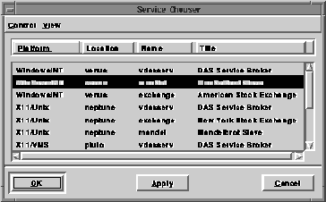

Service Chooser
The service chooser provides a common interface to the user for choosing network services defined in the Galaxy Distributed Application Services (DAS) framework. A service chooser can be created and used by any Galaxy application and is the recommended method for establishing a session with a network service defined in the DAS framework. The user can interactively select a service from the list of services that are currently registered with the local service broker application (vdasserv). The service chooser displays the attributes assigned to each service by the service provider; the user can configure the service chooser display to only show services with the attributes of interest to the user's application.
The list of services is obtained from the local service broker each time the service chooser dialog is opened, or when the Rescan option is selected from the Control Menu. The set of attributes displayed in the list of services can be modified by selecting different attributes from the View Menu. A service can be selected by highlighting the service in the list and clicking the OK or Apply button, depending on the current look-and-feel. Figure 70 shows an example of the service chooser.

Figure 70. The service chooser
Example 130. Creating a service chooser
Example 131. Apply function for a service chooser
The service chooser generates the list of available services by querying the local service broker. By default, all services registered with the service broker are returned as a result of the query. The user can restrict the list of services returned to just those services that match a particular set of service attributes using a call to SetMatchScrap. Example 132 shows how to query the service broker for only those services with a name attribute whose value is the string "Bruce." Key Functionality
This section contains sample code that demonstrates how to use the service chooser in an application that wants to establish a session with a service selected using the service chooser. Service choosers can be created dynamically using Create or initialized statically as in Example 130.{
vservicechsr *chooser = vservicechsrCreate();
vservicechsrSetApply(chooser, myApplyFunction);
vservicechsrOpen(chooser);
// ...
}
myApplyFunction is called when a service is selected from the list of available services and the OK or Apply buttons are clicked. The function is defined in Example 131.int myApplyFunction(vservicechsr *chooser, vscrap *scrap)
{
vsession *session;
session = vsessionCreate();
vsessionSetAttributesFromScrap(session, scrap);
// ...
return TRUE;
}
Ownership of the scrap is passed to the apply function in Example 131, which in turn uses the scrap to establish a session with the selected service. The scrap is consumed by the call to vsessionSetAttributesFromScrap and therefore does not need to be destroyed explicitly.
Table of Contents
Help Map
Need help? Contact Visix.